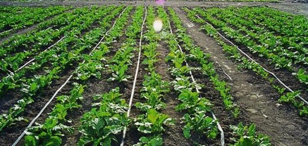
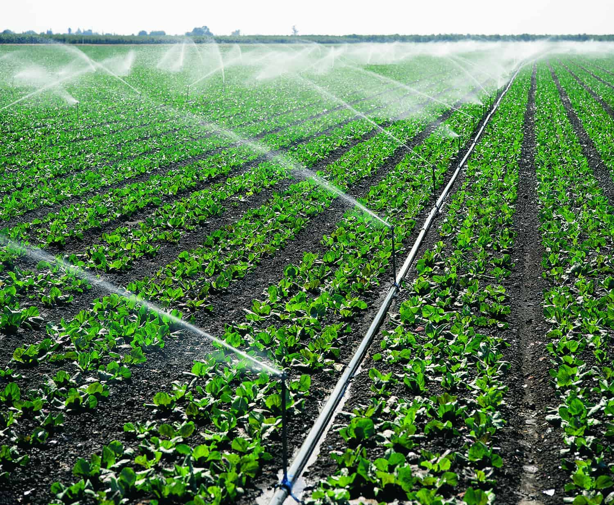
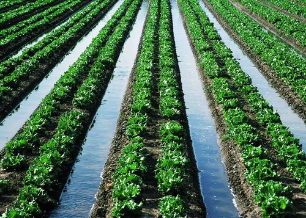
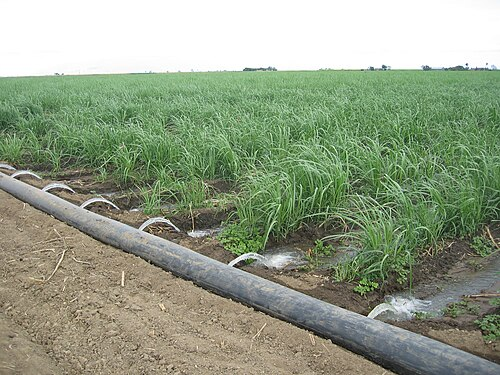
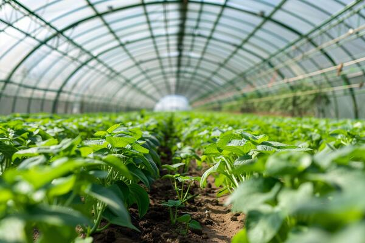
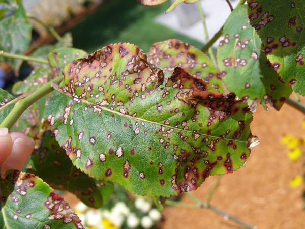
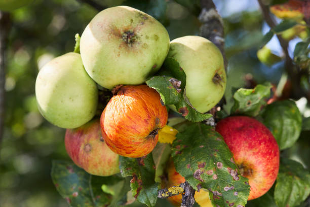
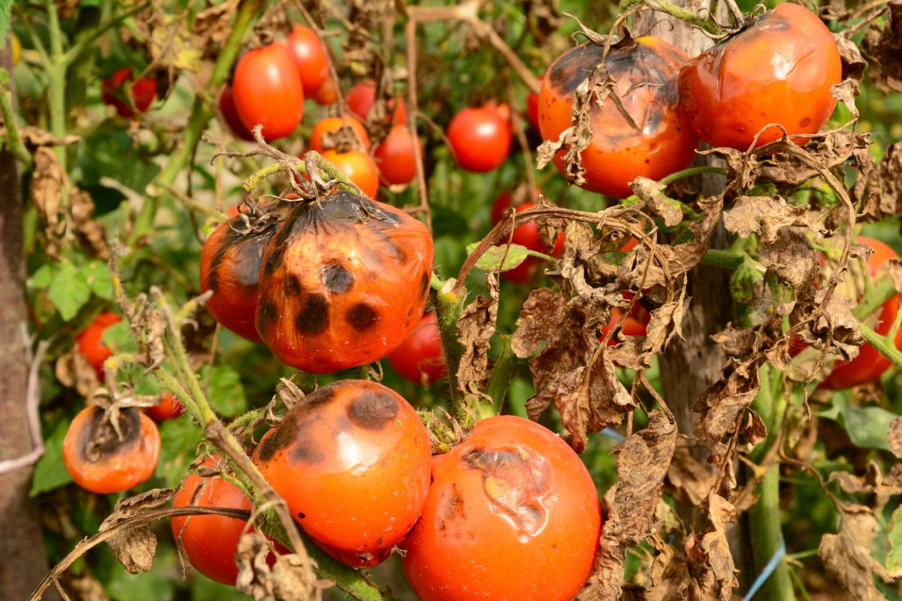

STATISTICS
Covering the balance between arable and other land, key crop shares like olives, wheat, and vegetables, and tracking production trends over the years, reflecting both challenges and opportunities for sustainable farming.
Irrigation Systems
Jordan employs drip irrigation, sprinklers, surface, and subsurface methods. Drip irrigation is the most efficient and increasingly common.

Drip Irrigation
Delivers water directly to plant roots, reducing water waste and improving efficiency for sustainable agriculture in Jordan's arid climate.

Sprinkler Irrigation
Sprays water into the air to simulate rainfall, providing even coverage for larger agricultural areas and field crops.

Surface Irrigation
Traditional method where water flows over the soil surface by gravity, commonly used for flood irrigation of large fields.

Subsurface Irrigation
Delivers water below soil surface directly to root zones, minimizing evaporation and maximizing water use efficiency.
Crops & Plants
The Future of
FARMING
Vertical farming is an advanced agricultural method that grows crops in vertically stacked layers, using controlled environment agriculture techniques and soilless farming methods.
- Water efficiency — Uses up to 90–95% less water.
- Space efficiency — Produces high yields in stacked areas.

Plant Diseases
Common threats include fungal infections in vegetables and viral diseases in tomatoes and cucumbers...

Plant Diseases
Plant diseases are a major challenge in agriculture, affecting crop yield, quality, and overall food security. They are caused by different factors, including fungi, bacteria, viruses, nematodes, and environmental stresses such as drought or nutrient deficiencies. If not managed properly, plant diseases can lead to severe economic losses for farmers and reduced availability of healthy food.
Read More
Fruit Diseases
Fruit crops are highly valuable in agriculture, but they are also vulnerable to many diseases that affect yield, quality, and market value. These diseases are caused by fungi, bacteria, viruses, and environmental stresses, and they can spread rapidly if not managed properly.
Read More
Vegetable Diseases
Vegetables are essential food crops, but they are highly susceptible to many diseases that reduce yield, quality, and market value. These diseases are caused by fungi, bacteria, viruses, nematodes, and environmental stresses, and can spread quickly if not properly managed.
Read More